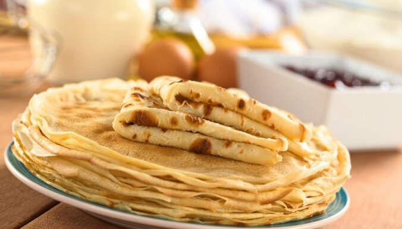

Plānās pankūkas

Garšīgas pankūkas brokastīm. Pasniegt ar ievārījumu vai augļiem.
Recepte paredzēta 6-8 pankūkām
- 1,5 glāzes milti
- 2 olas
- 1 glāze piens
- 1 glāze ūdens
- 2 ĒK cukurs
- šķipsna sāls
- 2 ĒK eļļa
Pagatavošana:
- Palielā bļodā ar mikseri vai putojamo slotiņu
sakuļ olas viendabīgā konsistencē.
- Pievieno eļļu, cukuru, šķipsnu sāls un visu samaisa.
Pievieno un iekuļ miltus - no sākuma 1 glāzi, tad
atlikušo 1/2 glāzi, kuļot, līdz izveidojusies bieza mīkla.
- Nepārtraukti kuļot, pamazām pievieno pienu un ūdeni,
līdz izveidojas viendabīga, samērā šķidra pankūku mīkla bez kunkuļiem.
Ja visu pienu un ūdeni pievienos vienā piegājienā, var gadīties,
ka milti neizšķīdīs, tādēļ svarīgi šķidrumu liet lēnām un pakāpeniski.
- Kad mīkla gatava, ļauj tai 10 minūtes atpūsties.
- Pannā lej eļļu un sakarsē. Ar kausiņu lej mīklu vienā pannas maliņā
un, grozot un kustinot pannu, mīklu izlīdzina pa visu pannu.
Kad pankūka no vienas puses apcepusies zeltaina,
ar platu cepamo lāpstiņu to apgriež uz otru pusi.
Pankūkām jābūt plānām.
Labu apetīti!
Recepte delfi.lv Tasty